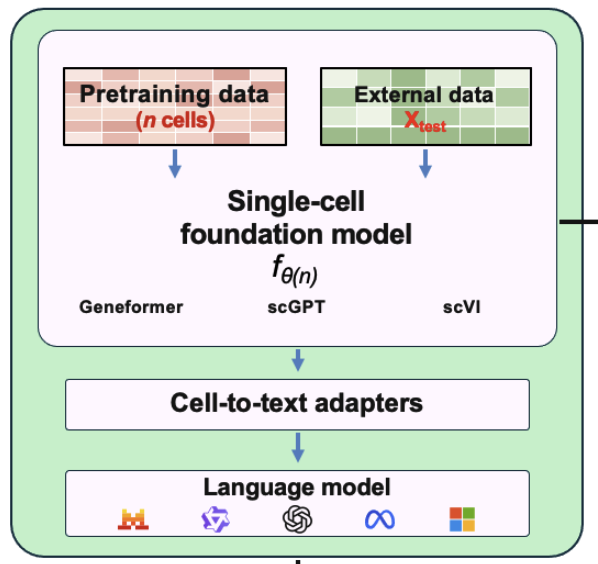

Scaling Laws in Single-Cell Representation Learning
Single-cell foundation models are being trained on more and more cells, but it is still not clear how much biological information their representations actually capture, or how that depends on the data they were trained on. In this project I study how cell number, sequencing depth and batch effects shape what these representations can recover.

Approach
I use random matrix theory to define mutual-information-based measures of how much biological signal a representation recovers from single-cell multi-omics data. From these I derive scaling laws in cell number, sequencing depth and batch effects, and compare them with real-data analyses of representations from models such as scVI, Geneformer and scGPT. Connecting these representations to language models through cell-to-text adapters is one way to read out what they have learned.
Experimental design
A practical question behind this work is how to spend a fixed sequencing budget: more cells, or deeper sequencing per cell? I look at this trade-off in systemic lupus erythematosus (SLE) and Perturb-seq datasets.
Paper
Random Matrix Scaling Laws in Single-Cell Representation Learning. S. Zhu, J. Hu, G. Gowri, A. M. Klein, R. Ma. Manuscript under review.